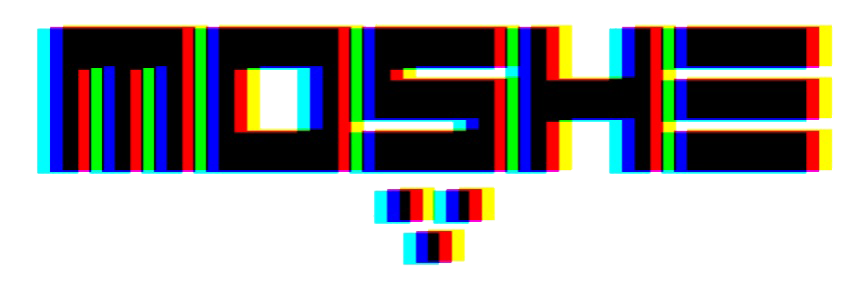
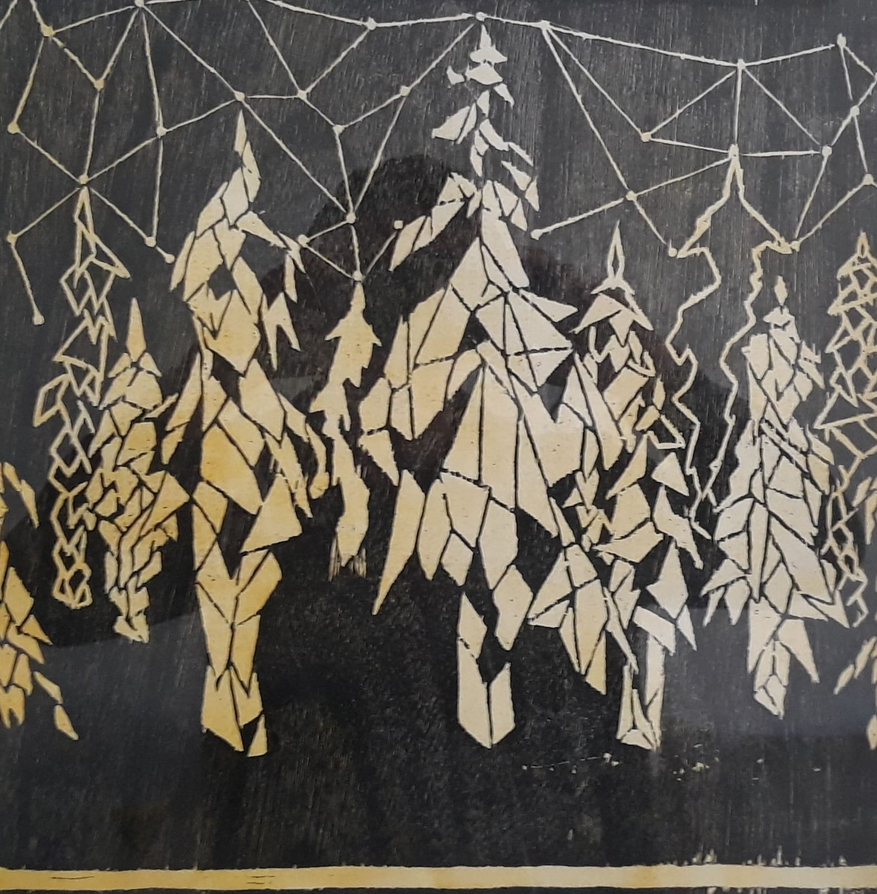
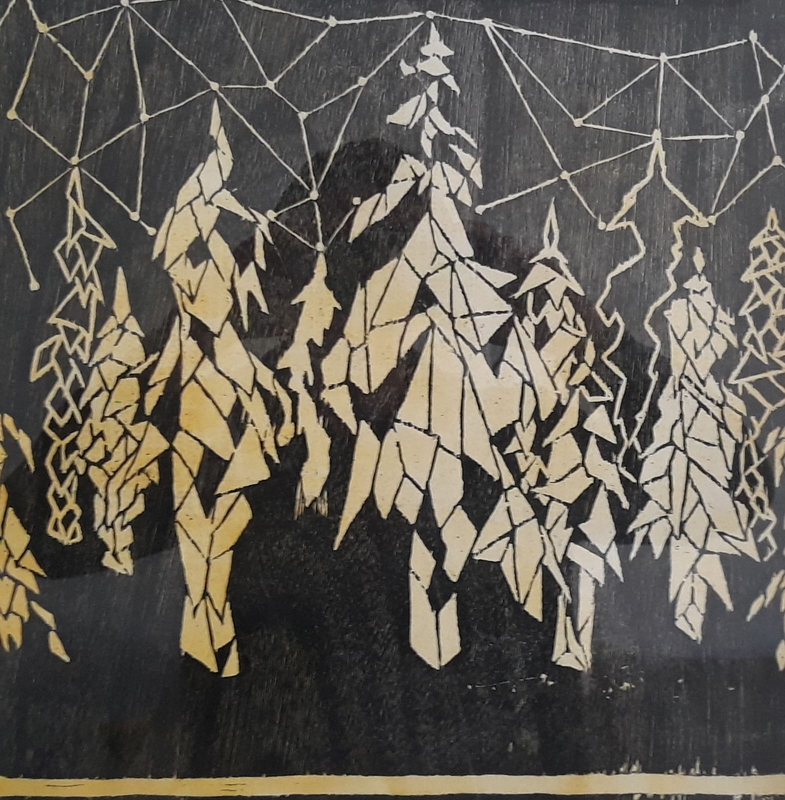
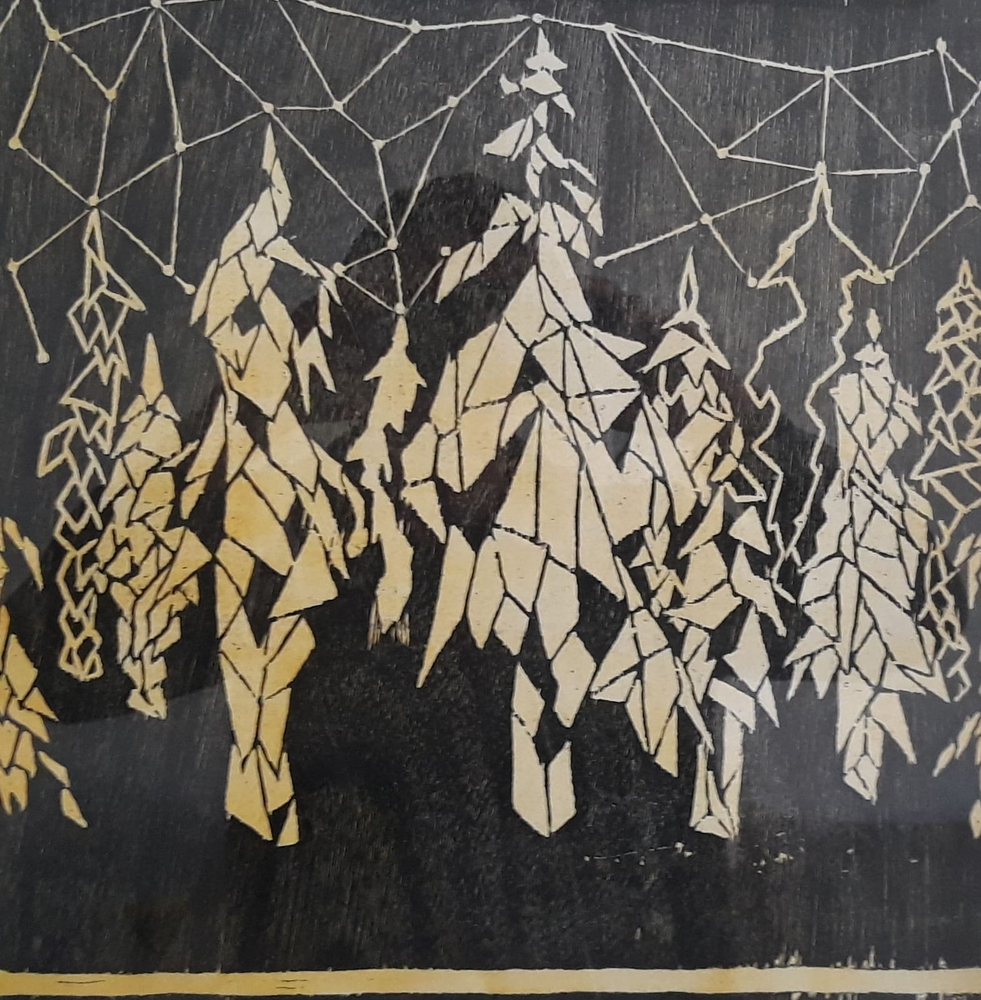

 

1984-1996 - Student for piano, guitar, Vocal
pedagogy and music history at the Jordan valley conservatory.
1984-2001 - A singer at a variance of choirs- classic and chamber music.
2004 - Student for professional MIDI, Hed College of Music.
2010 - Founded his first band - CTcamels
2017 - Published his first album - '8'
2018 - Started working on his second albom
2019 - Started working on his third albom, realising tow singels
